White-box Model Interpretation
DS-GA 3001 - Fall 2026
NYU Center for Data Science
2026-09-29
Week 4: White-box Model Interpretation
- Model Interpretation and Explanation
- White-box Approaches and Visualizations
- Related Research in VIS & AI
Outline
- Model Interpretation and Explanation
- White-box Approaches and Visualizations
- Related Research in VIS & AI
What is Interpretability?
“Interpretability is the degree to which a human can understand the cause of a decision”
- Can you predict what the model will do?
- Can you understand why it made a particular decision?
- Can you trust the model’s reasoning process?
- Key Dimensions: Local (single prediction) vs. Global (overall model logic)
Molnar, C. (2022). Interpretable Machine Learning. 2nd Edition.
Why Model Interpretation & Explanation?
Four Key Functions:
🔧 Debugging & Validation
- Detect bugs, biases, data leakage
- Identify spurious correlations
🔬 Knowledge Discovery
- Learn patterns, generate hypotheses
- Extract scientific insights
🤝 Building Trust
- Increase confidence, social acceptance
- Enable stakeholder buy-in
⚖️ Compliance & Ethics
- Meet legal/ethical requirements
- Conduct fairness audits
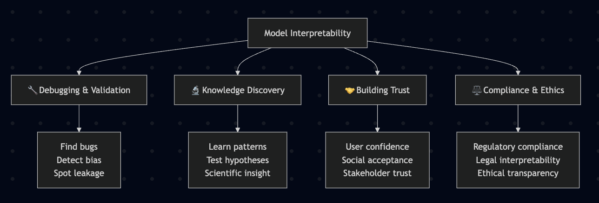
Machine-learning-assisted materials discovery using failed experiments
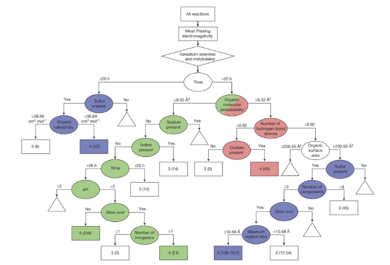
- Researchers firstly built a database of chemistry experiments (new material).
- Then they train an SVM to predict whether a new chemistry experiment will be successful.
- Then they train a surrogate DT to explain the model to learn more about the experiment.
Raccuglia, P., et al. (2016). Machine-learning-assisted materials discovery using failed experiments. Nature, 533, 73-76.
Properties of Good Explanations
Human explanations are naturally:
- Contrastive: “Why this, rather than that?” (not exhaustive)
- Example: “Loan denied because debt-to-income ratio was 45%, not the required ≤30%”
- Selective: Focus on 1-3 key reasons (not all causes)
- Social: Tailored to audience and context
- Focused on abnormal: Highlight surprising factors
- Truthful but simple: Balance accuracy with understandability
Molnar, C. (2022). Interpretable Machine Learning. 2nd Edition.
Why Model Interpretation & Explanation?
- Fairness
- Privacy
- Reliability or Robustness
- Causality
- Trust
Taxonomy of Interpretability Methods
Intrinsic (White-box)
- Interpretability built into model structure
- Examples: Linear models, short decision trees, sparse models
- Understand by examining model internals
- Today’s focus
Post-hoc (Black-box)
- Explain after training
- Works with any model (neural nets, ensembles)
- Examples: LIME, SHAP, saliency maps
- Next week’s topic
Additional dimensions: Model-specific vs Model-agnostic | Local vs Global | Feature importance vs Feature effects
Outline
- Model Interpretation and Explanation
- White-box Approaches and Visualizations
- Related Research in VIS & AI
White-box Models
We discuss the following models that are intrinsically interpretable:
- Linear Regression
- Generalized Additive Models (GAM)
- Tree-based Models
- Decision Rules
Linear Regression
Linear models can be used to model the dependence of a regression target y on some features x in a format as below: \[\begin{equation} y = \beta_0 + \beta_1 x_1 + \ldots + \beta_n x_n + \varepsilon\end{equation}\]
The predicted target \(y\) is a linear combination of the weighted features \(\beta_i x_i\). The estimated linear equation is a hyperplane in the feature/target space (a simple line in the case of a single feature).
The weights specify the slope (gradient) of the hyperplane in each direction.
Linear Regression
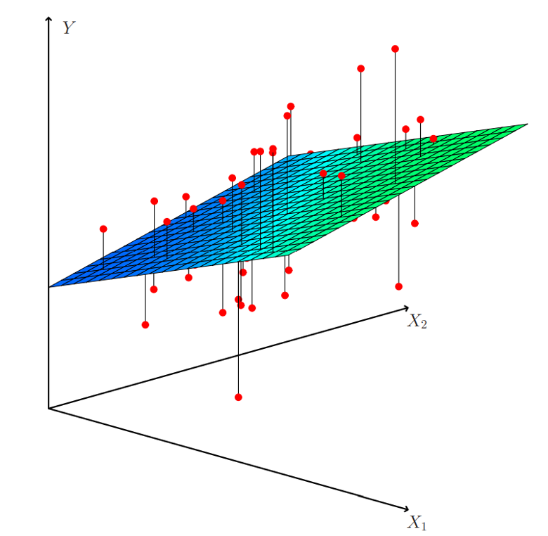
Linear Regression: An Example of Housing Price
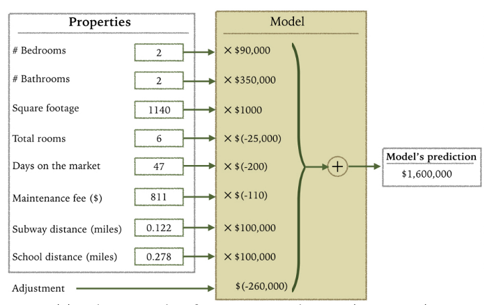
How do you interpret the influence of each property on the prediction of housing price?
Interpreting Linear Model Coefficients
Basic interpretation: An increase in feature \(x_j\) by one unit changes the prediction by \(\beta_j\) units
- ✅ Numerical features: Direct marginal effect (holding others constant)
- ✅ Categorical features: Coefficients show difference from reference category
- ⚠️ Scale-dependent: Coefficients change with feature units
- ⚠️ “Holding others constant” assumes Feature Independence (a strong assumption!)
Molnar, C. (2022). Interpretable Machine Learning. Chapter 4.1.
Important Assumptions for Interpretation
Linear models make strong assumptions:
Linearity: Effects are additive (no interactions unless explicitly added)
Independence: Features are not strongly correlated
Homoscedasticity: Constant error variance
No multicollinearity: Correlated features can flip coefficient signs!
Example: Housing model with both “square footage” AND “number of rooms”
- These features are highly correlated (VIF > 10)
- Coefficients become unstable and unreliable for interpretation
- Model predicts well, but individual coefficients are meaningless
Molnar, C. (2022). Interpretable Machine Learning. Chapter 4.1.
Evaluation of Linear Regression Model
Notation:
- \(y_i\) = actual/true value for sample \(i\)
- \(\hat{y}_i\) = predicted value for sample \(i\)
- \(\bar{y}\) = mean of all actual values
- \(N\) = number of samples
R Square
\(R^2\) (R-squared): Proportion of variance explained \[\begin{equation} R^2 = 1 - \frac{\sum (y_i - \hat{y}_i)^2}{\sum (y_i - \bar{y})^2} \end{equation}\]
Mean Square Error (MSE)/Root Mean Square Error (RMSE) \[\begin{equation} MSE = \frac{1}{N} \sum_{i=1}^{N} (y_i - \hat{y}_i)^2, \quad RMSE = \sqrt{MSE} \end{equation}\]
Mean Absolute Error (MAE) \[\begin{equation} MAE = \frac{1}{N} \sum_{i=1}^{N} |y_i - \hat{y}_i| \end{equation}\]
Visual Analytics (VA) Systems for Linear Regression
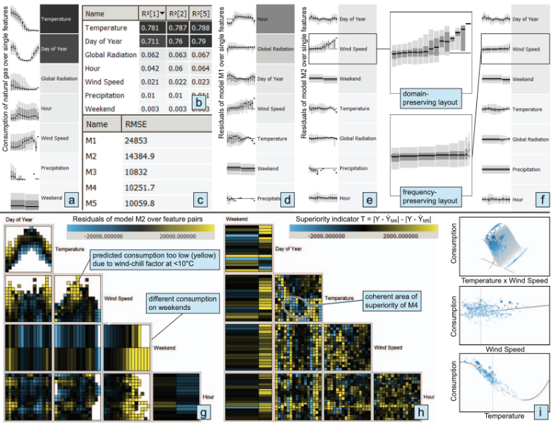
Core Visualizations:
- Scatterplot Matrix: Explore feature relationships and partitions
- Parallel Coordinates: Analyze high-dimensional patterns
- Interactive Partitioning: Split data to test model stability
Key Insights:
- Trade-off between model complexity and accuracy
- Feature ranking and selection
- Model validation across partitions
Mühlbacher, T., & Piringer, H. (2013). A Partition-Based Framework for Building and Validating Regression Models. IEEE TVCG. Best Paper Award, IEEE VAST 2013.
Pros, Cons, and Limitations of Linear Models
✅ Pros:
- Highly interpretable: Each coefficient has clear meaning
- Statistical guarantees: Inference possible when assumptions hold
- Fast: Analytical solution, no hyperparameters
- Transparent: Easy to explain to stakeholders
⚠️ Cons & Limitations:
- Linearity assumption: Cannot capture non-linear relationships
- Gaussian assumption: Features assumed to follow normal distribution
- Multicollinearity: Correlated features break interpretation
- No interactions: Must manually add interaction terms
- Assumption violations: Wrong inference if residuals not normal
What if your dataset does not follow these assumptions?
Generalized Additive Models (GAMs)
GAMs extend linear models by replacing linear terms with flexible shape functions:
\[\begin{equation} g(\mathbb{E}[y|X]) = \beta_0 + \sum_{j=1}^{p} f_j(x_{j}) \end{equation}\]
Key idea: Replace \(\beta_j x_j\) (linear) with \(f_j(x_j)\) (flexible smooth function)
- Each \(f_j\) is learned from data (typically using splines)
- Maintains additive structure → still interpretable
- Can mix linear and non-linear terms
Molnar, C. (2022). Interpretable Machine Learning. Chapter 4.2.
GAMs are Interpretable via Partial Dependence Plots (PDPs)
Linear Model: \(y = \beta_j x_j\)
- Fixed slope \(\beta_j\)
- Constant effect across all values
- Example: Each year of age adds $1,000 to salary
GAM: \(y = f_j(x_j)\)
- Flexible shape function
- Effect varies across feature range
- Example: Salary peaks at age 45-55, declines after
Visualization: PDPs show \(f_j(x_j)\) - the contribution of feature \(x_j\) to the prediction across its range
How GAMs Work: Splines as Building Blocks
GAMs use splines (piecewise polynomial functions) to approximate smooth curves:
Technical approach:
- Replace feature \(x_j\) with basis functions
- Fit weights to these basis functions
- Add penalty term for smoothness
Interpretation:
- Visualize each \(f_j(x_j)\) as a curve
- Y-axis shows contribution to prediction
- Relative to mean prediction
Molnar, C. (2022). Interpretable Machine Learning. Chapter 4.2.
Generalized Additive Models (GAMs): An Example
\[\begin{equation} Wage = f(year, age, education) = b_0 + f_1(year) + f_2(age) + f_3(education) \end{equation}\]
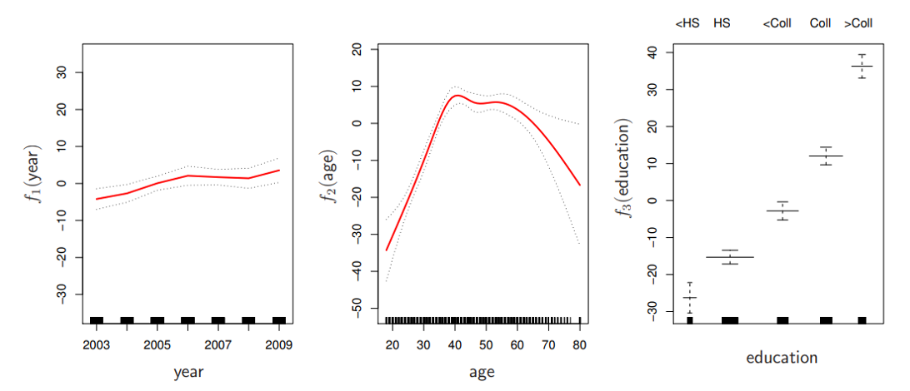
Generalized Additive Models (GAMs): Pros and Cons
✅ Pros:
- Non-linear flexibility: Automatically learns smooth curves for each feature
- Better predictions: Captures non-linear relationships without manual feature engineering
- Still interpretable: Visualize each \(f_j(x_j)\) independently
- Maintains additivity: Easy to understand feature contributions
⚠️ Cons:
- No interactions by default: Must explicitly add interaction terms
- Computationally expensive: Finding all pairwise interactions is infeasible with many features
- Harder to explain: Shape functions less intuitive than linear coefficients
- Overfitting risk: Requires careful smoothness tuning
Explainable Boosting Machines
\[\begin{equation} g(\mathbb{E}[y]) = \beta_0 + \sum f_j(x_j) \end{equation}\]
\[\begin{equation} g(\mathbb{E}[y]) = \beta_0 + \sum f_j(x_j) + \sum f_{ij}(x_i, x_j) \end{equation}\]
What if we have a lot of interactions? How do we choose our interactions?
Explainable Boosting Machines
Partial Dependence Plots (PDPs)
What PDPs show: The marginal effect of a feature on the predicted outcome
Mathematical idea: Average the model’s predictions across all data points while varying one feature
- Y-axis: Change in prediction (relative to baseline)
- X-axis: Feature values
- Curve shape: Reveals linear, monotonic, or complex relationships (U-shaped in example)
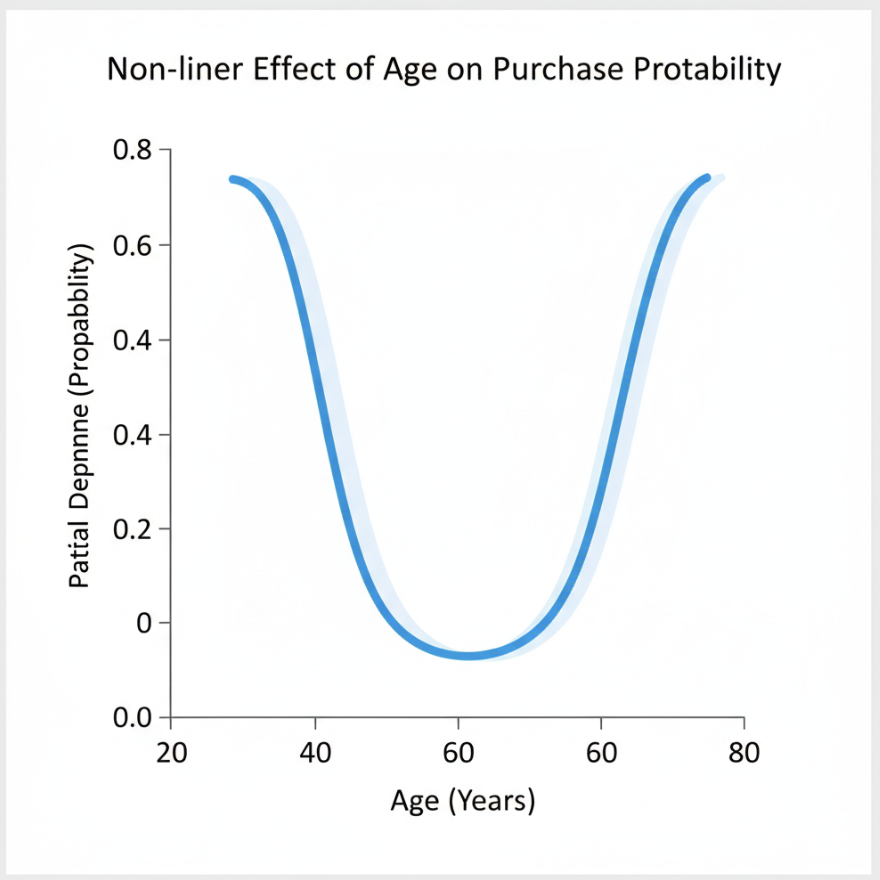
Molnar, C. (2022). Interpretable Machine Learning. Chapter 8.1.
PDPs: Advantages and Limitations
✅ Advantages:
- Intuitive: Easy to understand and explain
- Model-agnostic: Works with any model
- Causal hints: Suggests feature importance
- Shows shape: Reveals non-linear patterns
⚠️ Limitations:
- Independence assumption: Assumes features are independent (often violated!)
- Averages hide details: Misses heterogeneous effects
- Unrealistic combinations: May average over impossible feature values
- Max 2 features: Can’t visualize high-dimensional interactions
Molnar, C. (2022). Interpretable Machine Learning. Chapter 8.1.
Visualizing EBMs (or GAMs)
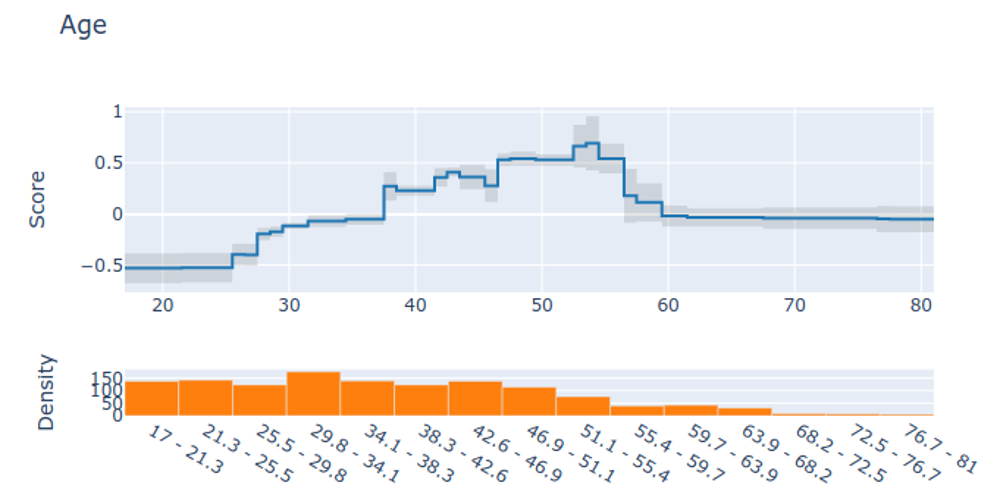
Partial dependency plot
Visualizing EBMs (or GAMs)
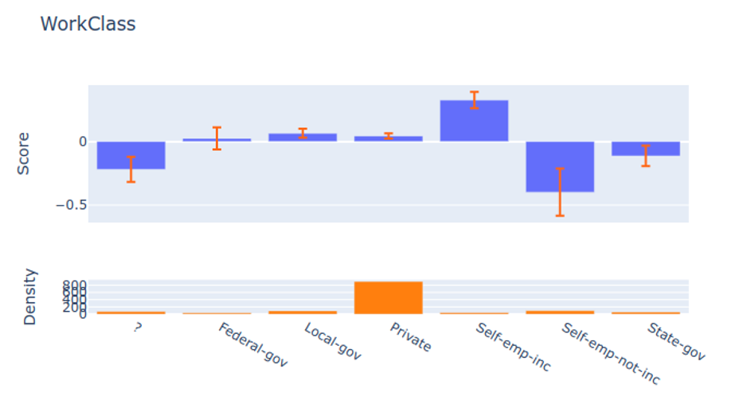
Partial dependency plot
Visualizing EBMs (or GAMs)
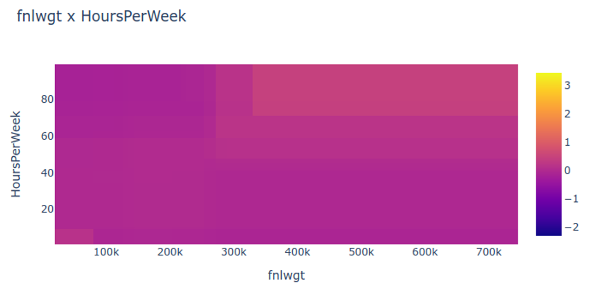
Partial dependency plot
Visualizing EBMs (or GAMs)
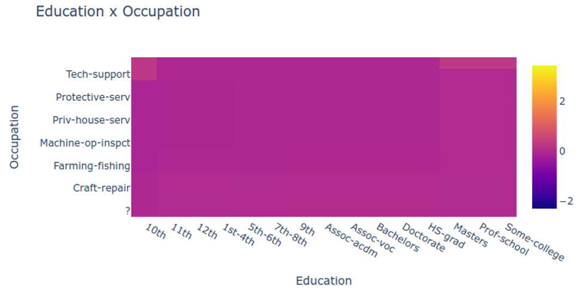
Partial dependency plot
Visual Analytics (VA) Systems Using GAMs
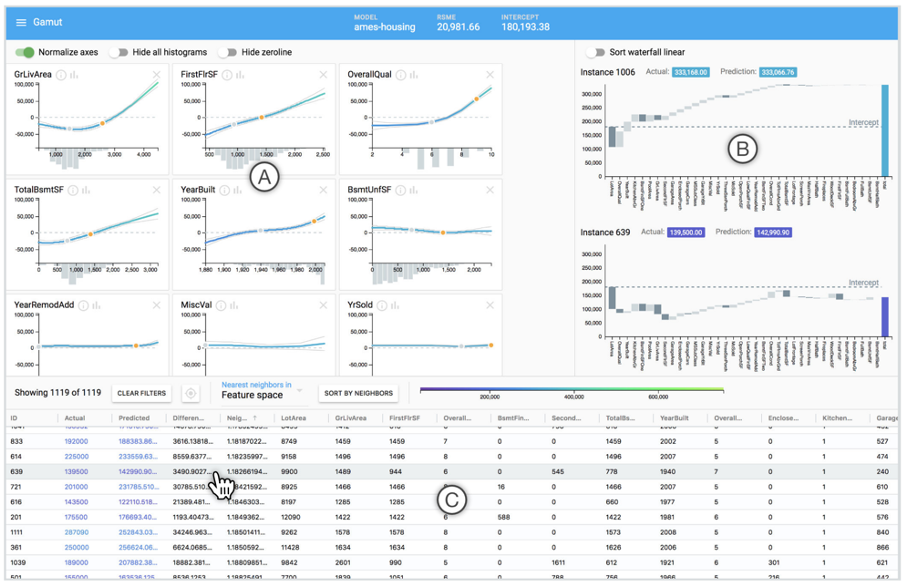
Hohman, F., Head, A., Caruana, R., DeLine, R., & Drucker, S. M. (2019). Gamut: A Design Probe to Understand How Data Scientists Understand Machine Learning Models. CHI 2019.
Visual Analytics (VA) Systems Using GAMs
Drucker, S. (2020). Data Visualization: Bridging the Gap Between Users and Information. Microsoft Research Webinar.
GAM Changer: Injecting Domain Knowledge via Interactive Editing
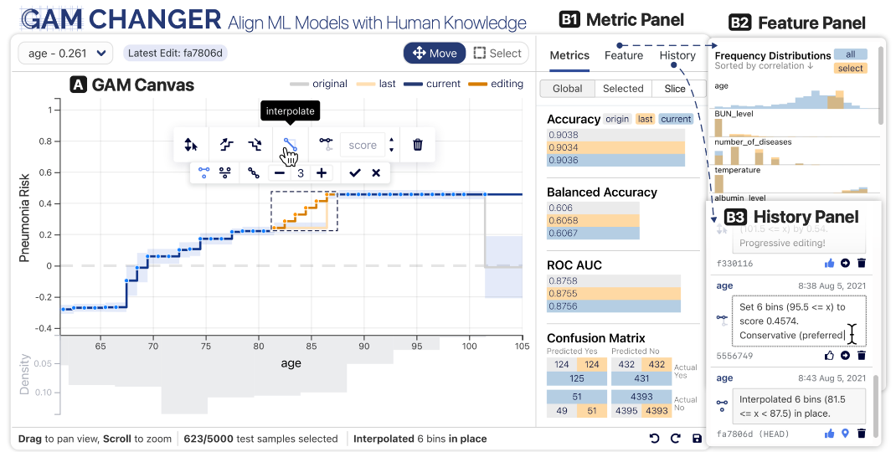
Human-in-the-Loop Features:
- Edit shape functions to encode domain knowledge
- Enforce monotonicity where business logic requires
- Smooth noisy patterns to improve generalization
- Real-time feedback on model performance
Key Innovation: Bridges data-driven learning with expert knowledge through interactive visualization
Wang, Z. J., Kale, A., Nori, H., Stella, P., Nunnally, M., Chau, D. H., … & Caruana, R. (2021). GAM Changer: Editing Generalized Additive Models with Interactive Visualization. arXiv:2112.03245. Demo | Code
Decision Trees: How They Work
Decision trees recursively split data based on feature thresholds:
- Internal nodes: Tests on features
- Branches: Test outcomes (Yes/No)
- Leaf nodes: Final predictions
- Algorithm: CART
Prediction: Follow path from root to leaf
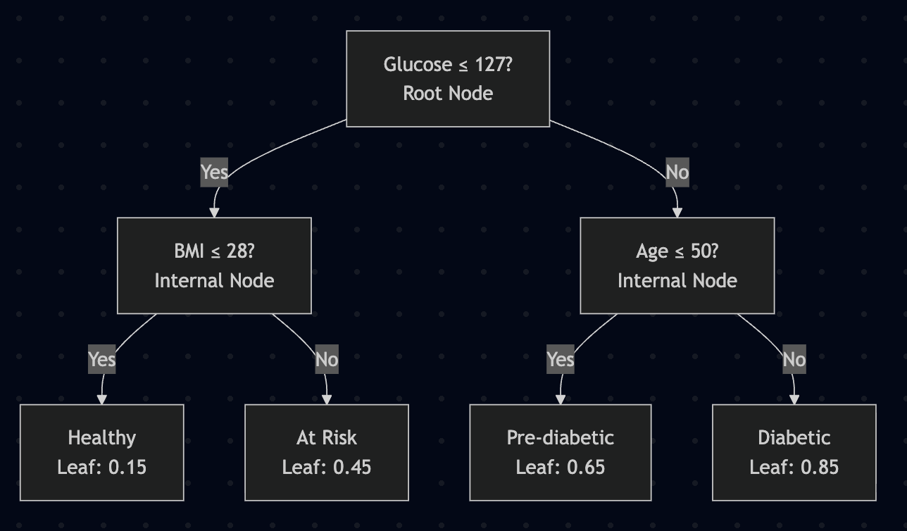
Example: 3 splits, 4 leaves, depth 2
Molnar, C. (2022). Interpretable Machine Learning. Chapter 4.4.
Decision Trees: Interpretation
Reading a tree: “If feature \(x_j\) is [smaller/larger] than threshold \(c\) AND … then predict \(\hat{y}\)”
✅ Strengths:
- Natural interactions: Captures feature interactions automatically
- Visual logic: Clear decision rules
- No preprocessing: Works with raw features
- Human-friendly: Mimics human reasoning
⚠️ Limitations:
- Linear relationships: Poor at modeling smooth trends
- High variance/instability: Small data changes → different tree
- Depth problem: Deep trees become uninterpretable
- Step functions: Predictions jump at thresholds
→ This instability motivates ensemble methods (Random Forests, Gradient Boosting) which average many trees
Trade-off: Ensembles gain accuracy but lose white-box interpretability → Need for global surrogates (discussed later)
Molnar, C. (2022). Interpretable Machine Learning. Chapter 4.4.
Tree-based Models: Example
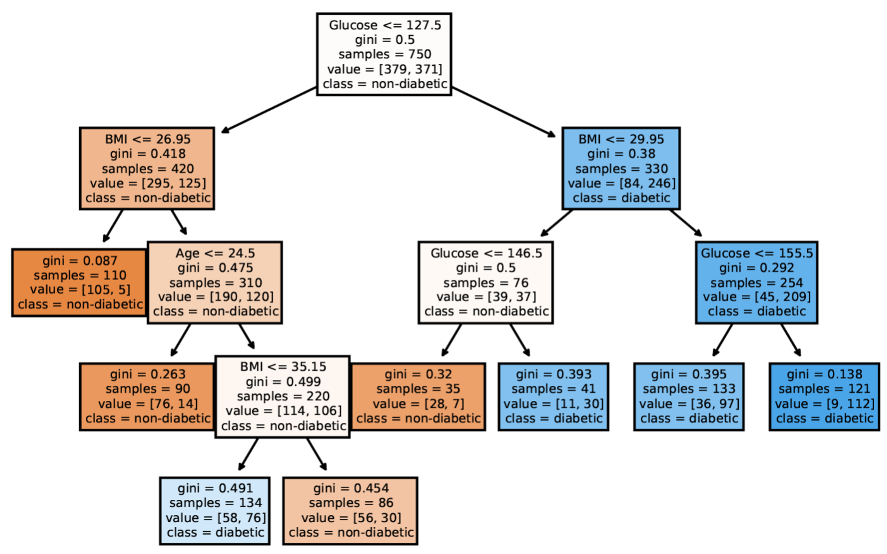
A decision tree of diabetes diagnosis
VA Systems Using Tree-based Models
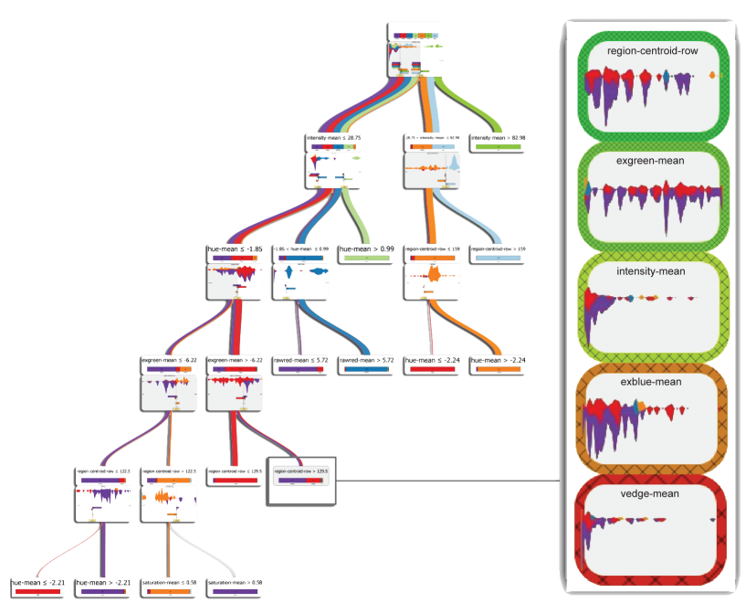
It shows the flow of different class, and the class distribution along the feature values.
van den Elzen, S., & van Wijk, J. J. (2011). BaobabView: Interactive Construction and Analysis of Decision Trees. IEEE VAST 2011.
VA Systems Using Tree-based Models
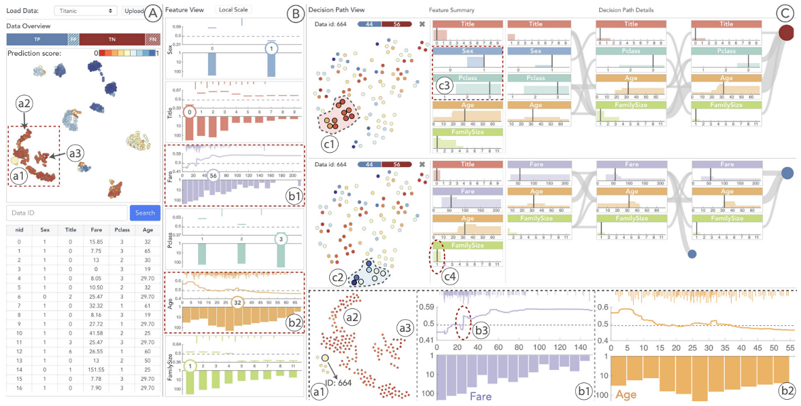
iForest
Zhao, X., Wu, Y., Lee, D. L., & Cui, W. (2019). iForest: Interpreting Random Forests via Visual Analytics. IEEE TVCG, 25(1), 407-416.
Interactive Construction and Analysis of Decision Trees
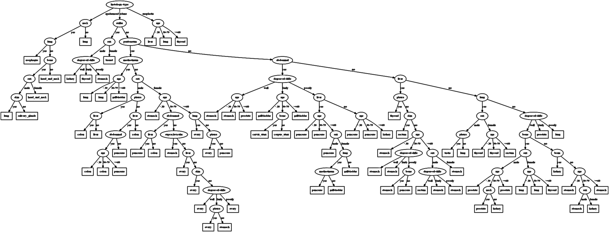
- Novel node-link visualization for very large decision trees
- Interactive construction: users can split nodes, prune branches
- Multiple views: overview, detail, rules
Interactive Construction: Video Demonstration
Interactive Construction: Colored Flow Visualization
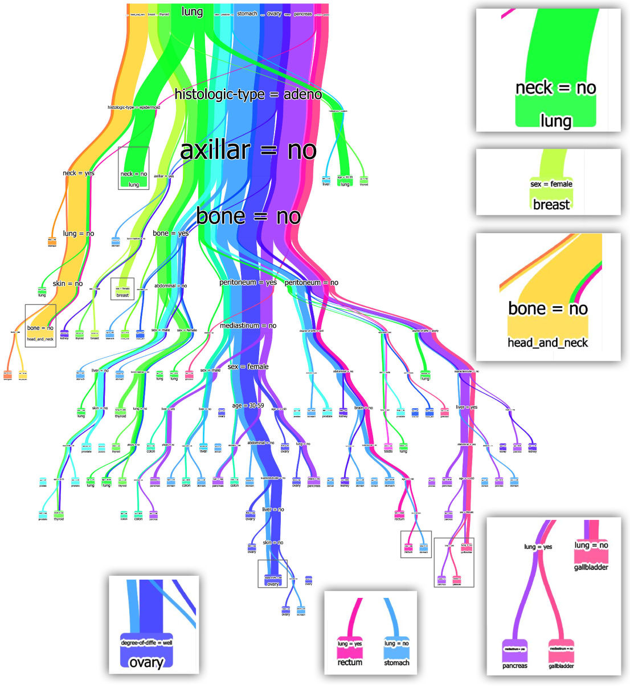
Decision paths colored by class and features
Interactive Construction: Rule Visualization
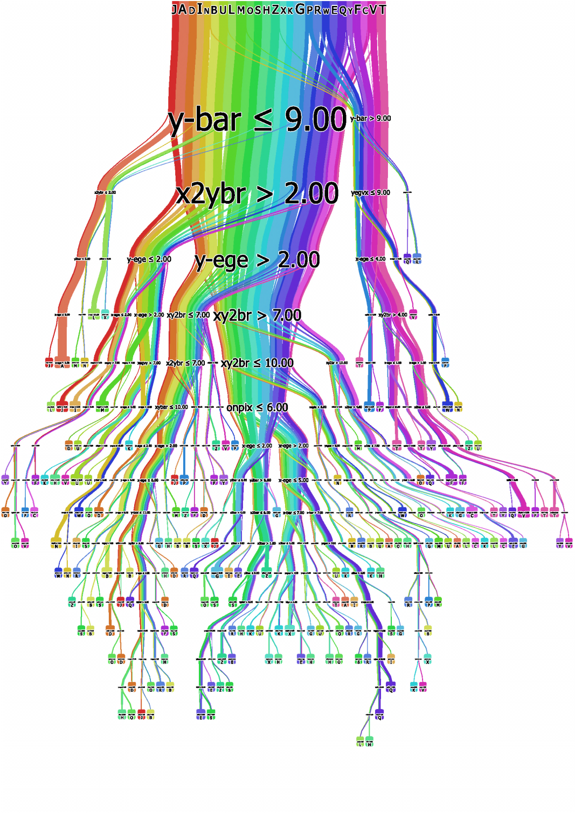
Decision rules with feature splits
Decision Rules
Decision Rules: What Are They?
Definition: A decision rule is a simple IF-THEN statement consisting of a condition (antecedent) and a prediction (consequent).
- Structure: IF (condition) THEN (prediction)
- Example: IF glucose > 120 AND age > 50 THEN diabetes_risk = high
- Natural language: Rules mirror human decision-making processes
- Sparse representation: Only relevant features appear in conditions
- Fast prediction: Simple logical evaluation
- Transparent: Each rule’s logic is fully exposed
- Compliance-ready: Rules can be directly translated into legal/regulatory documentation
Key Difference: Trees vs. Rule Systems
Decision Trees:
- Mutually Exclusive: Each instance follows exactly one path
- No conflicts: Instance reaches exactly one leaf
- Hierarchical: Rules are ordered by tree structure
- Example: A patient is either “high risk” OR “low risk”, never both
Rule Systems:
- Not Mutually Exclusive: Instance can match multiple rules
- Conflict resolution needed: Voting, priority, or confidence-based
- Flat structure: Rules can be evaluated in any order
- Example: A loan can trigger both “high income” AND “high debt” rules
Implication: Rule systems need strategies to handle overlapping rules (majority vote, highest confidence, first match)
Decision Rules: Key Characteristics
Evaluation Metrics:
- Support: Percentage of instances matching rule conditions
- Confidence/Accuracy: Percentage of correct predictions when rule fires
- Coverage: How much of the dataset is explained by the rule set
Learning Approaches:
- OneR: Selects single best feature, discretizes it, creates one rule per value
- Sequential Covering: Learns rules greedily - finds best rule, removes covered instances, repeats
- Bayesian Rule Lists: Pre-mines frequent patterns, uses Bayesian model selection for optimal ordering
- RIPPER: Fast rule learner with pruning to prevent overfitting
Decision Rules: Pros and Cons
✅ Strengths:
- Easy to interpret: Natural language reasoning
- Fast prediction: Simple logical checks
- Robust: Invariant to feature transformations
- Feature selection: Automatically identifies relevant features
- Human-aligned: Matches how experts explain decisions
⚠️ Limitations:
- Regression challenges: Works best for classification
- Feature discretization: Continuous features need binning
- Linear relationships: Hard to capture smooth trends
- Overfitting risk: Complex rules may not generalize
- Rule conflicts: Overlapping rules need resolution
Molnar, C. (2022). Interpretable Machine Learning. Chapter 4.7.
Decision Rules: Different Structures
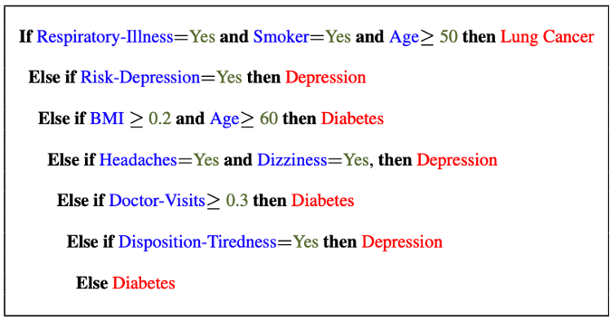
Clearly see how the decision is made and which rule is more important.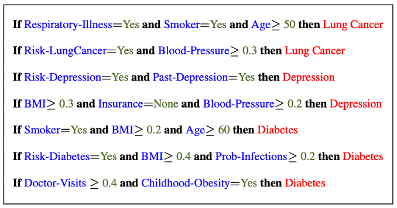
The final decision is made based on a voting mechanism.
A recent user study shows that “if-then structure without any connecting else statements enables users to easily reason about the decision boundaries of classes.”
Decision Rules: Different Structures
Disjunctive normal form (DNF, OR-of-ANDs) Conjunctive normal form (CNF, AND-of-ORs)
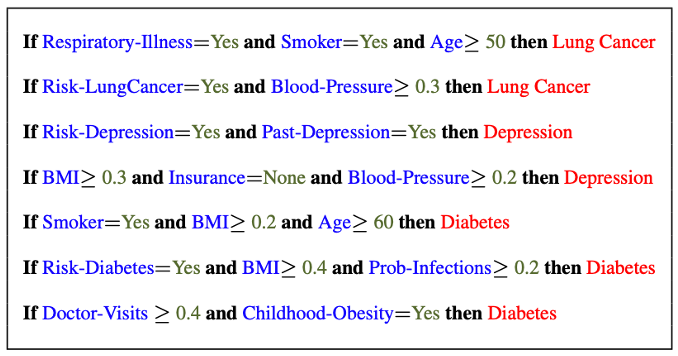
What form does this rule set follow?
Decision Rules: Visual Factors Influence Rule Understanding
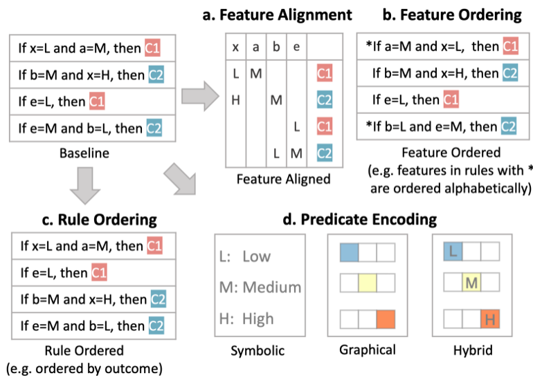
Research Questions:
Can different visualizations of rules lead to different levels of understanding?
What visual factors influence understanding and how do they affect rule comprehension?
Key findings: Visual encoding choices significantly impact interpretability
Yuan, J., Nov, O., & Bertini, E. (2021). An Exploration and Validation of Visual Factors in Understanding Classification Rule Sets. arXiv:2109.09160.
Evaluation of Rules
Given a rule below:
If \(X\), then class \(Y\).
Support / Coverage of a rule:
\[\begin{equation} \text{Support} = \frac{\text{number of instances that match the conditions in } X}{\text{total number of instances}} \end{equation}\]
Confidence / Accuracy of a rule:
\[\begin{equation} \text{Confidence} = \frac{\text{number of instances that match conditions in } X \text{ and belong to class } Y}{\text{number of instances that match conditions in } X} \end{equation}\]
Global Surrogate
Imagine that we have a black-box model (too complex to understand the internal structure), can we use white-box models to help us understand the model behavior of the black-box model?
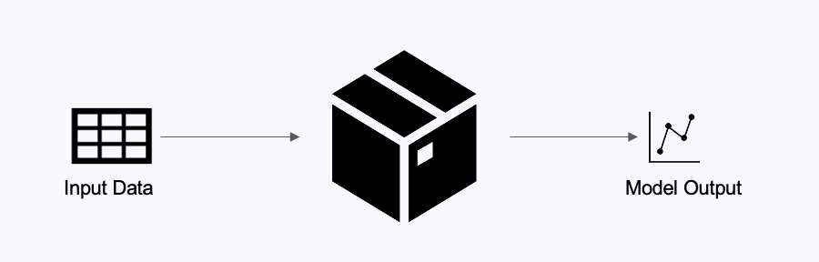
Global Surrogate
Open the black box by understanding a “surrogate model” that approximate the behavior of the original black-box model.
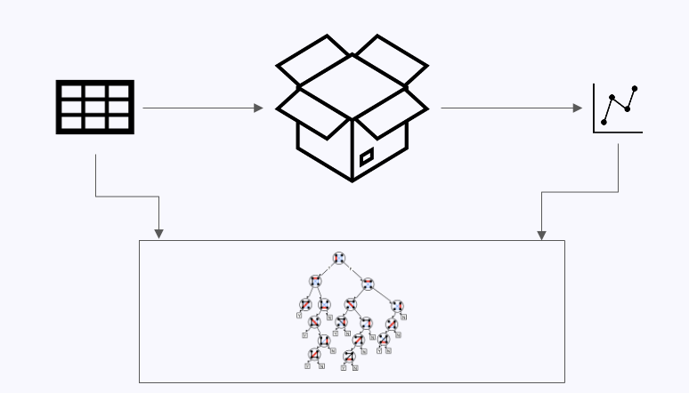
The Fidelity-Interpretability Trade-off
The Fidelity-Interpretability Trade-off: A fundamental challenge in XAI where increasing model interpretability often decreases fidelity to the original model’s behavior
What you want:
Simple, interpretable surrogate with high fidelity to the black-box model
What you get:
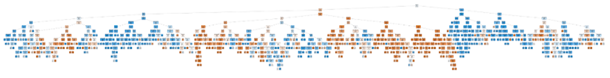
Either low fidelity (simple but inaccurate) or low interpretability (accurate but complex)
VA System for Rule List
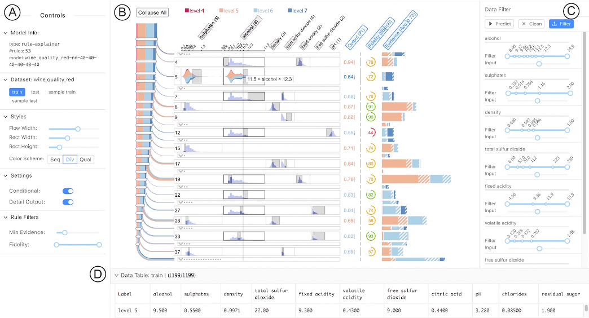
RuleMatrix
Ming, Y., Qu, H., & Bertini, E. (2019). RuleMatrix: Visualizing and Understanding Classifiers with Rules. IEEE TVCG, 25(1), 342-352.
VA Systems for Rules in Random Forest
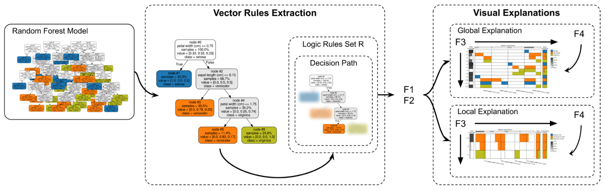
Explainable Matrix
Popolin Neto, M., & Paulovich, F. V. (2021). Explainable Matrix – Visualization for Global and Local Interpretability of Random Forest Classification Ensembles. IEEE TVCG, 27(2), 1427-1437.
Other white-box models?
- Naive Bayes
- K-nearest neighbors
- etc.
Outline
- Model Interpretation and Explanation
- White-box Approaches and Visualizations
- Related Research in VIS & AI
Manipulating and Measuring Model Interpretability
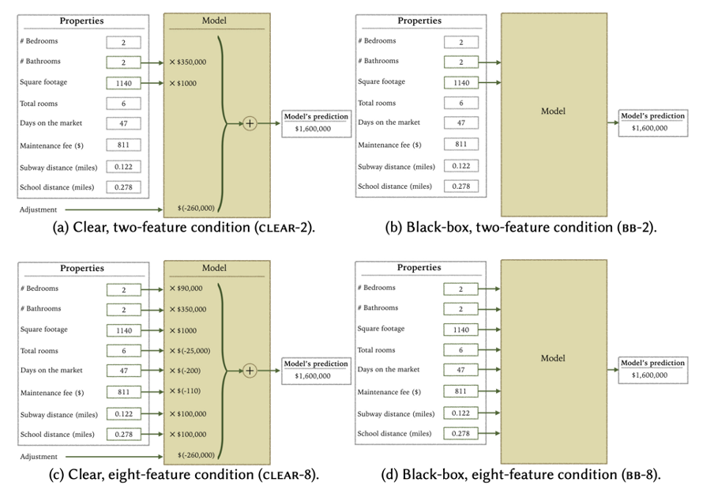
Poursabzi-Sangdeh, F., Goldstein, D. G., Hofman, J. M., Vaughan, J. W., & Wallach, H. (2021). Manipulating and Measuring Model Interpretability. CHI 2021.
Stop explaining black box machine learning models for high stakes decisions
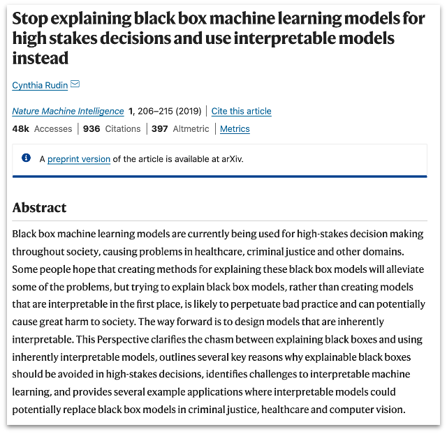
Rudin, C. (2019). Stop explaining black box machine learning models for high stakes decisions and use interpretable models instead. Nature Machine Intelligence, 1(5), 206-215.
Slice Finder: Automated Data Slicing for Model Validation
Chung, Y., Kraska, T., Polyzotis, N., Tae, K. H., & Whang, S. E. (2019). Slice Finder: Automated Data Slicing for Model Validation. IEEE ICDE 2019, 1550-1553. Extended version: arXiv:1807.06068.
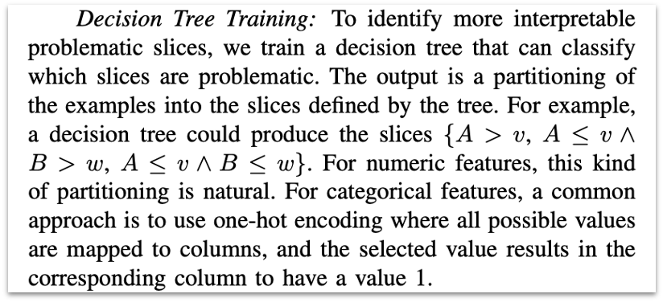
How about we use whether the model prediction is wrong or not to train a “surrogate tree”?
Toolkits
InterpretML: https://github.com/interpretml/interpret
Practice 1
Notebook: https://colab.research.google.com/drive/1nKE6WIApebHi67yfhH6k5mZN86evLZOM?usp=sharing
Some other libraries for PDP visualization: https://scikit-learn.org/stable/modules/partial_dependence.html https://interpret.ml/docs/pdp.html
Practice 2
Notebook: https://colab.research.google.com/drive/12LV2Z_1BbP3efACYp2QxzsPaOrIn8a8l?usp=sharing